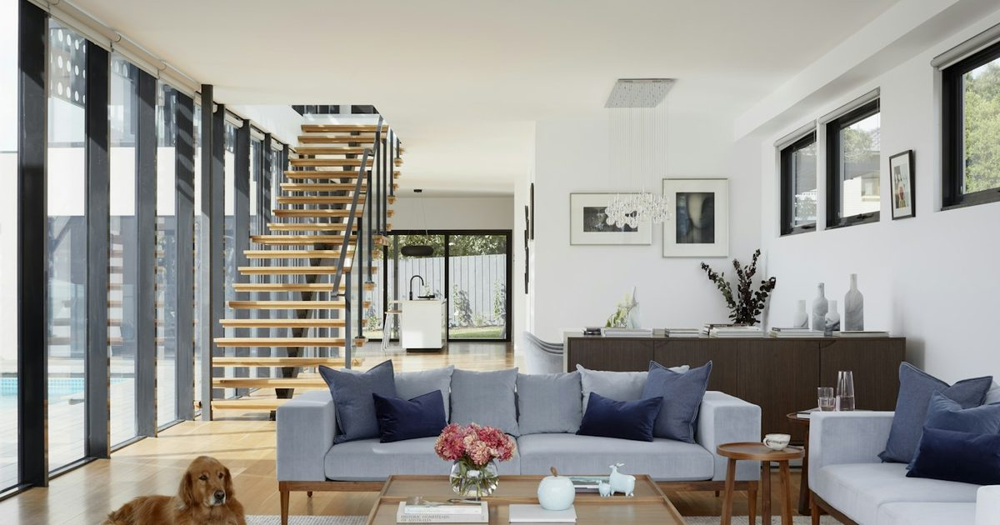
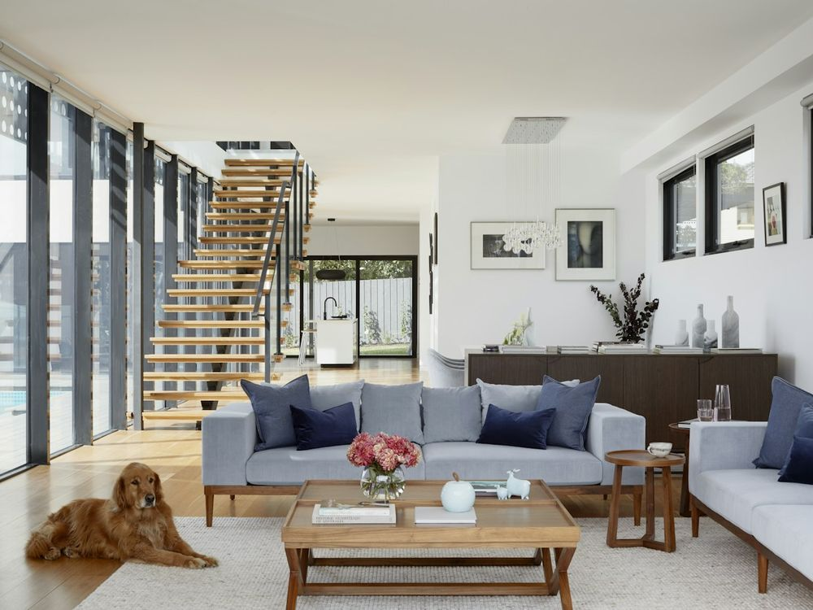

1
Kompletní rekonstrukce bytu
Hlavní služba, nejvyšší hodnota zakázky. Cílí na majitele starších bytů, kteří řeší celou rekonstrukci najednou.
Facebook
příspěvek na profil / do skupin
Text příspěvku
🔨 REKONSTRUKCE BYTU NA KLÍČ — Vysočina a Praha Předáte nám klíče a vrátíme vám hotový byt. Nemusíte shánět zvlášť zedníka, elektrikáře, instalatéra a podlaháře — máme je všechny v týmu. Co je v ceně: ✅ Bourací práce včetně odvozu suti ✅ Nové rozvody vody, odpadů a elektřiny ✅ Koupelna a WC na míru ✅ Podlahy, štuky, malování ✅ Interiérové dveře a zárubně ✅ Úklid a předávací protokol 💰 Od 12 000 Kč/m² podle stavu bytu a materiálů 📅 Obvykle 6–10 týdnů 📋 Pevná cena ve smlouvě — žádné účty navíc na konci 🛡️ Záruka 60 měsíců na provedenou práci Prohlídka a položkový rozpočet jsou ZDARMA a nezávazné. Do 48 hodin po prohlídce víte přesnou cenu. Působíme na Vysočině (Jihlava, Třebíč, Havlíčkův Brod, Žďár n. S., Pelhřimov) a v Praze. 📞 +420 123 456 789 ✉️ info@mostavty.cz 🌐 www.mostavty.cz #rekonstrukce #rekonstrukcebytu #Vysocina #Jihlava #Praha #stavebnifirma #bydleni
Kam s tím: na firemní profil a do skupin typu
„Bazar Jihlava“, „Jihlava a okolí“, „Rekonstrukce a bydlení“.
Do skupin vkládejte max. 1× týdně, jinak vás vyhodí.
Bazoš
sekce Služby → Stavebnictví
Nadpis inzerátu
Kompletní rekonstrukce bytů na klíč — Vysočina, Praha
Text inzerátu
Provádíme kompletní rekonstrukce bytů na klíč. Jedna firma zajistí celou zakázku — nemusíte koordinovat několik řemeslníků. CO DĚLÁME: - bourací práce a odvoz suti - nové rozvody vody, odpadů a elektřiny včetně rozvaděče - revizní zpráva na elektroinstalaci - koupelny a WC (zděné i sádrokartonové) - sádrokartonové příčky a podhledy - štuky, vyrovnání stěn, malování - podlahy (vinyl, laminát, dřevo, dlažba) - montáž dveří a obložkových zárubní - průběžný i finální úklid CENA: Od 12 000 Kč/m² podle stavu bytu a zvolených materiálů. Přesnou cenu řekneme po prohlídce — rozpočet je položkový, vidíte zvlášť materiál a práci. TERMÍN: Kompletní rekonstrukce bytu obvykle 6-10 týdnů. PROČ MY: - pevná cena ve smlouvě, vícepráce jen s vaším písemným souhlasem - harmonogram prací předem, průběh posíláme fotkami - jeden stavbyvedoucí jako váš kontakt po celou dobu - záruka 60 měsíců na práci - pojištění odpovědnosti Prohlídka a rozpočet ZDARMA a nezávazně. Působíme na Vysočině (Jihlava, Třebíč, Havlíčkův Brod, Žďár nad Sázavou, Pelhřimov, Velké Meziříčí, Humpolec, Telč) a v Praze. Volejte: +420 123 456 789 (Po-Pá 7:00-17:00) E-mail: info@mostavty.cz
Pozor: Bazoš maže inzeráty s odkazem na web
v textu. Web uveďte až v odpovědi na dotaz, nebo vůbec.

